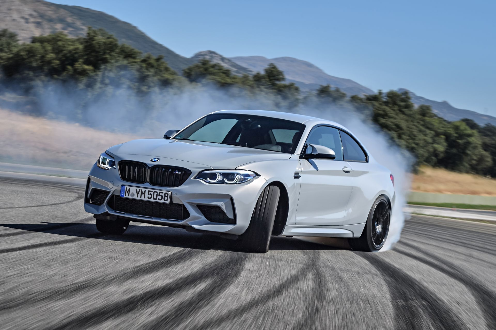
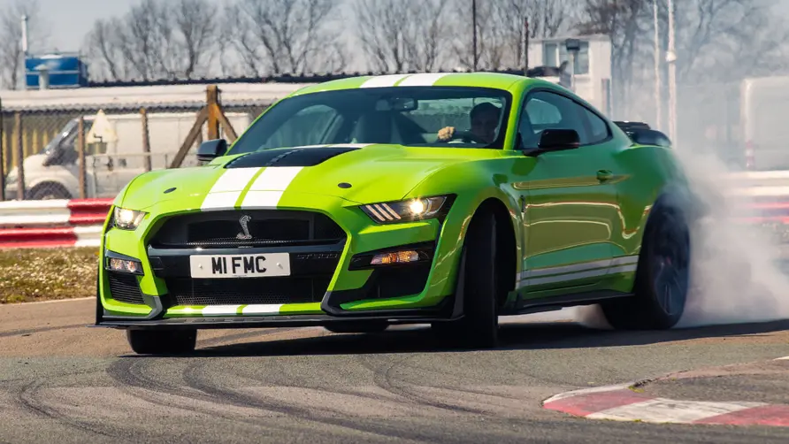
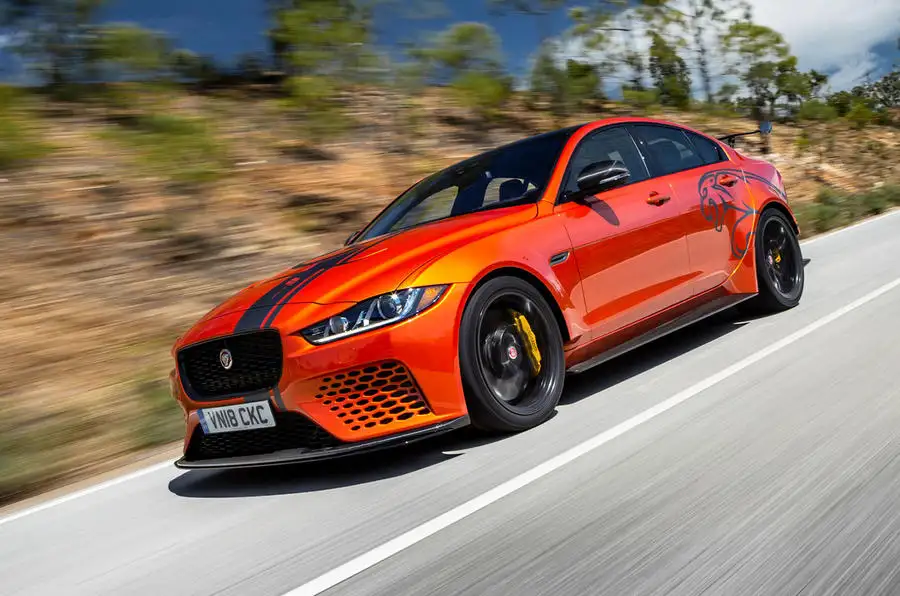

1. BMW M2 Competition

Para 2019, BMW decidió golpear el motor turbo de seis cilindros en línea recta del M3 al M2, creando el maravillosamente genial BMW M2 Competition. Es más rápido que el BMW M2 normal, y gracias a un avanzado sistema de lubricación por sumidero húmedo diseñado para mantener el flujo de aceite durante las curvas difíciles, es perfecto para la pista.
2. Ford Mustang Shelby GT500

Si, por alguna razón, 526 caballos de fuerza no son suficientes para usted, también está el GT500. Tiene 760 caballos de fuerza a través de una versión de cigüeñal sobrealimentado del motor del GT350, que envía potencia a las ruedas traseras a través de un embrague doble de cambio rápido, perfecto para tiempos de vuelta.
3. Jaguar XE SV Project 8

Habla sobre una dicotomía. El XE SV Project 8 es un práctico sedán de cuatro puertas y cinco asientos que resulta ser uno de los autos de pista más extremos de Jaguar, con paneles de fibra de carbono y un V-8 sobrealimentado de 600 caballos de fuerza.